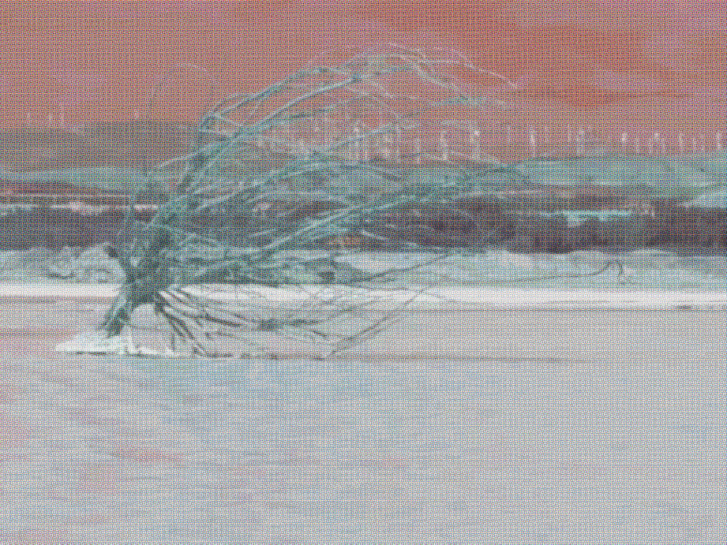

正在空景镇北山区域进行地质普查的省地矿局第三勘探队近日传来重要发现：在一处被灌木掩蔽的天然溶洞最深处，队员们意外发掘出一片从未记载的地下湖。湖水本身散发出柔和的银白色光芒，将数百米长的洞穴照得通明如昼，勘探队因此将其命名为“昼湖”。
领队高级工程师潮启明向本报展示了初步勘测手稿。潮工表示，该湖泊位于地下约3km深处，水面面积估测约4k平方公里，水深暂未测得底。“我们进入洞穴时原本一片漆黑，走了不知道多久后，远处突然透出光来，起初以为是地下荧光矿，走近才发现是整片湖水在发光，在如此深的洞穴里照的如同白昼一般。现场所有人都惊呆了。”潮工回忆道。

根据现场取样分析，湖水清澈无异味，但水中未检测出已知的磷、荧光矿物或生物发光成分。潮工说：“这种光源稳定、冷光、不刺眼，目前科学上无法解释。我们暂时不实施直接进行人体接触，已通过机器采集水样全封闭运输送往省实验室进一步研究。”
目前，洞穴入口已由镇政府临时封闭，等待进一步考察。潮启明工程师呼吁，在未查明湖水性质前，居民请勿靠近该区域。镇政府表示将保护这一自然奇观，并计划未来在科学指导下向公众开放。